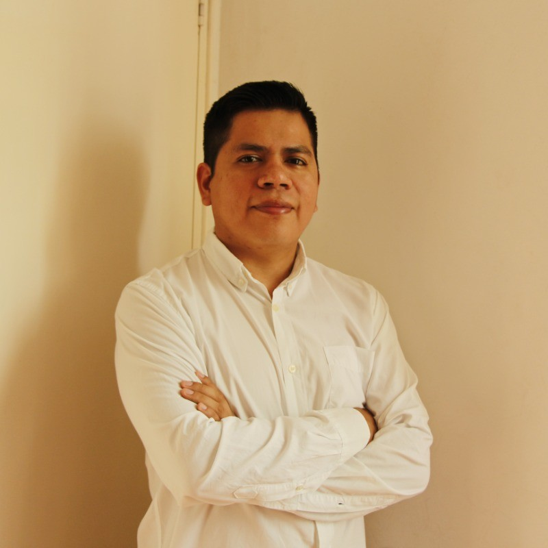

Colegio San José
Maristas Huacho
Gestión académica, horarios y asistencia.
ARQUITECTURA · DESARROLLO · VISIÓN DE NEGOCIO
Soy Carlos Farro. Conecto arquitectura, código y equipos para convertir retos de negocio en software que puedes usar.

DETRÁS DE UNA SOLUCIÓN
Elige un reto. Explora cómo lo abordo.
React ✦ .NET ✦ Node.js ✦ Python ✦ Cloud ✦ Inteligencia artificial
EXPERIENCIA CON NOMBRE PROPIO
Organizaciones para las que he desarrollado soluciones o aportado experiencia técnica.
Gestión académica, horarios y asistencia.
Portal operativo e integración de impresión de etiquetas.
Comprobantes electrónicos y gestión de guías.
Gestión de personal, asistencia y contratos.
Aplicación móvil para lecturas y evidencias.
Arquitectura de soluciones y liderazgo de área.
Ventas, inventario y seguimiento de equipos.
Backoffice y aplicaciones para la gestión de entregas.
APOYO ESPECIALIZADO
Participación de apoyo en el chatbot Sofía.
Soporte técnico a una colaboración externa en el chatbot Rufo.
01 / EXPLORA MI TRABAJO
Desde una landing para tu negocio hasta una operación conectada con sistemas, personas y dispositivos.
Prueba otra palabra o explora todos los proyectos.
◇ Casos de clientes presentados de forma anónima. Las vistas gráficas ilustran cada solución.
02 / ELIGE TU SIGUIENTE NIVEL
Soluciones a medida para la etapa en la que está tu negocio.
Conecta Odoo con tus aplicaciones y procesos de mantenimiento. APIs para equipos, órdenes de trabajo, recursos y evidencias.
Hablemos de tu proyecto Odoo ↗Una presencia digital que explique tu propuesta, muestre tus servicios y facilite la primera conversación con tus clientes.
Quiero presentar mi negocio ↗Ventas, inventario, personal y trazabilidad. Conectamos los procesos que hoy viven en herramientas separadas.
Quiero ordenar mi operación ↗De tu idea a una aplicación que puedas usar: portales, plataformas de gestión y experiencias móviles.
Quiero construir un producto ↗Asistentes conversacionales, integraciones y flujos que conectan tus herramientas y reducen tareas manuales.
Quiero automatizar procesos ↗Una base técnica para crecer. APIs, bases de datos, servicios cloud y mejoras en sistemas existentes.
Quiero mejorar mi plataforma ↗03 / DETRÁS DEL CÓDIGO
Soy ingeniero de sistemas, arquitecto de software de las soluciones de Laraigo y líder de área. Mi experiencia combina desarrollo full stack, arquitectura y liderazgo de equipos para convertir necesidades de negocio en productos funcionales.
He trabajado en plataformas de atención al cliente, logística y gestión empresarial, integrando servicios de inteligencia artificial y soluciones en la nube.
Maestría en Transformación DigitalUniversidad Peruana de Ciencias Aplicadas · 2020–2022
Ingeniería de SistemasUniversidad Nacional Pedro Ruiz Gallo · 2011–2016
04 / TRAYECTORIA PROFESIONAL
Una versión limpia, lista para guardar como PDF desde tu navegador.
Arquitecto de Software y Líder de Área · Ingeniero de Sistemas
Arquitecto de software de las soluciones de Laraigo y líder de área, con experiencia en desarrollo full stack y liderazgo de equipos. Experiencia en plataformas omnicanal, aplicaciones web y móviles, automatización e integración de inteligencia artificial, con trabajo sobre bases de datos y servicios cloud.
Laraigo · Función simultánea al liderazgo de área
VCA Perú
VCA Perú
Bitinka
I.S.T.P. Nuestra Señora del Carmen
Gobierno Regional de Ica
Experiencia en gestión empresarial (2021), logística de última milla (2019) y turismo móvil con Mochiklero (2016).
Desarrollo e integración de facturación electrónica para SUNAT mediante OpenFact, con facturas, boletas, notas de crédito y débito, y gestión de guías de remisión y transportistas.
Participación de apoyo en proyectos de chatbots del sector público, incluyendo soporte técnico a una colaboración externa.
Explorar los casos del portafolio ↗DE LA PRIMERA CONVERSACIÓN AL LANZAMIENTO
Objetivos, usuarios y lo que necesitas resolver.
Alcance, prioridades y una propuesta clara.
Avances visibles y feedback en cada etapa.
Entrega, puesta en marcha y próximos pasos.
05 / PRESS START
Cuéntame qué tienes en mente.
Encontraremos el siguiente paso para tu proyecto.
Soy cofundador de IAMA. Podemos trabajar con facturación para tu negocio.